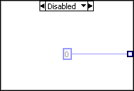

The output tunnel of a Conditional Disable or Diagram Disable structure has an undefined type. The type of the tunnel is determined in the active case of the structure.
To correct this error, move to the case that contains the undefined tunnel and specify the type of the tunnel.